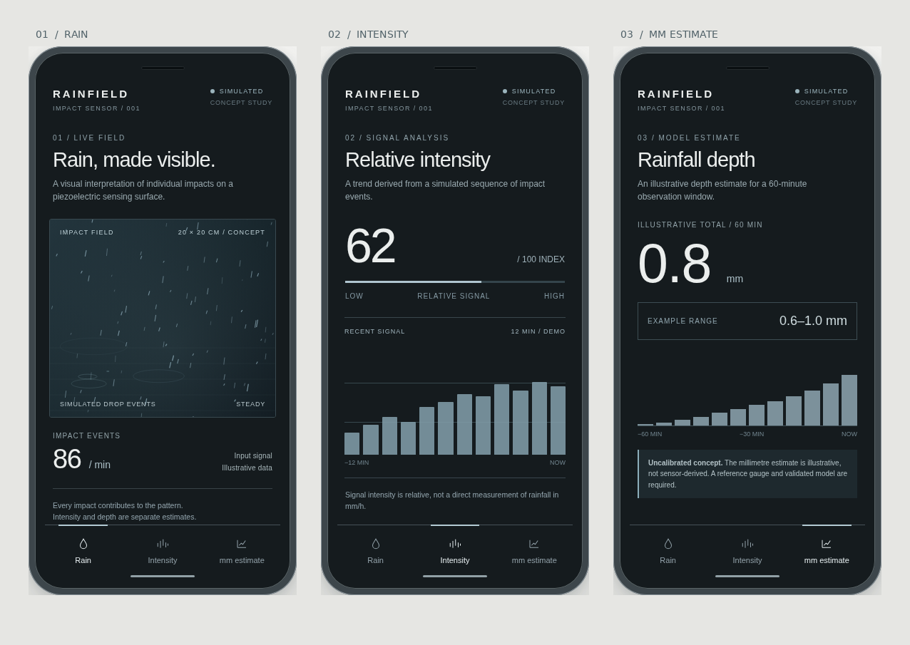

Learning through touch
“An idea becomes tangible when it can be held, tested and discussed.”
Research and development of embodied and tangible learning activities, with Björn Hedin.

Project
Physical representations can change how people reason about abstract questions. This work explores the interplay between measurement, manipulation, drawing, dialogue and conceptual understanding in STEM education.
The projects connect educational research with hands-on activities and iterative development of tangible learning materials.
Current concept studies include RAINFIELD, a proposed piezoelectric rain-impact sensor and mobile data visualisation.
RAINFIELD
A piezoelectric sensing surface for making rainfall impacts observable. Explore a sensor study and an animated mobile interface with views for rain, relative intensity and a future calibrated rainfall estimate.
Explore RAINFIELD ↗